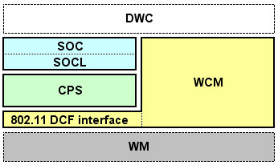

NITRO-SDK Wi-Fi ライブラリ 2.1 正式版 対応
"Confidential"
[注意！] このドキュメントの内容は、秘密情報であるため、厳重な取扱い、管理を行なってください。
©2006 Nintendo Co.,Ltd. All rights reserved.
Microsoft Internet Explorer 5.0/Netscape 6.0以降推奨
NITRO-SDK Wi-Fi ライブラリを使うことで、ニンテンドーDSのワイヤレス通信（インフラストラクチャーモード）を利用して、
インターネットへアクセスを行なうことができます。
NITRO-SDK Wi-Fi ライブラリには以下の制限があります。
NITROWIFI_ROOT 環境変数に、NitroWiFi へのパスを設定して下さい。
NITRO-SDK Wi-Fi ライブラリは、内部では以下のような層構造で構成されています。

NITRO-SDK Wi-Fi ライブラリは現在、以下の接頭辞を予約しています。そのためアプリケーション プログラムでは、以下の名前ではじまる関数や変数を使用しないでください。
| WCM | ワイヤレス接続ライブラリ用プレフィックス |
| CPS | TCP/IP プロトコルスタック用プレフィックス |
| SOC SOCL |
ソケットライブラリ用プレフィックス |
プログラムのソースコードには、以下のヘッダファイルをインクルードして下さい。
#include <nitroWiFi.h>
so2soc.h 及び iw2wcm.h がインクルードされますが、
これらのヘッダは NITRO-INET に存在するライブラリの API 定義を NITRO-SDK Wi-Fi ライブラリ用に定義しなおすラッパーです。
このラッパーにより、NITRO-INET を使って開発を進めていた場合でも、容易にライブラリだけを差し替えることが可能です。
include $(NITROWIFI_ROOT)/build/buildtools/commondefs
include $(NITROWIFI_ROOT)/build/buildtools/modulerules
$(NITROWIFI_ROOT)/build/demos/shared/ap_info.c